Minimal-shot autonomy concerns the question of how a system survives in unfamiliar environments. The commonly accepted response is to collect more data and retrain. We know this answer works, but it's impractical. It does not scale across the long tail of conditions a deployed vehicle, robot, or drone may encounter in the real world. Snow, dust, smoke, washouts and variable human infrastructure are obvious examples. A perception system that depends on having been trained on each new condition will not only be expensive and cumbersome to develop, but will necessarily lag every condition it has not yet encountered.
The protagonist of this project is the humble snow-clearing vehicle, dedicated to doing a task ripe for automation. Maintaining a workforce of trained drivers for engagement during only a small subset of the year, who must deploy at very short notice, is inefficient and expensive. More importantly, snow-clearing is a geographically bounded, repetitive and speed-limited operation over roads whose geometry is already known. Unlike open-ended urban driving, the operational objective is narrow: keep the vehicle aligned with a known road corridor while avoiding people, vehicles, kerbs, signs, parked cars and other obstacles. This makes the snow plough a particularly strong candidate for autonomy.
A snow plough's job is simple: sweep the road clear. The obvious difficulty is that, while the plough is in operation, the road is necessarily invisible. Curbs are buried, lane markings are gone, the boundary between tarmac and verge is no longer defined. A self-driving stack trained on traditional road conditions, applied directly to the plough's camera, will report with calibrated confidence that the entire scene is road and should be cleared. Approaching this problem via the traditional method of annotating a labelled snow dataset large enough to cover the long tail of road, weather, and time-of-day combinations is uneconomic and chronically incomplete. The alternative principle proposed in this project does not require new training data and is applicable across the broader concept of minimal-shot autonomy.
For almost every operating environment where autonomy fails for lack of data, an adjacent regime exists, temporally or seasonally or geographically, where data is plentiful and rich, and whose key components remain the same across environments. The road which needs to be ploughed this winter is the same road it was in the summer. Its appearance has changed, but its position in space and relative to local landmarks has not.
Snowseer is a canonical demonstration of leveraging training data via structural constants across environments. It transfers knowledge across regimes to achieve minimal-shot autonomy.
The core of this project is a simple idea: a constants-bridge. This is a composition that takes a model trained on regime A, an inference target in regime B, and a known invariant linking A and B, and uses the invariant characteristics of each regime to transfer the model into environment B without retraining.
The invariant in this work is geometric. The road sits where it sat last summer, in the same place relative to other landmarks. The shape is more general. Anything that stays observable and unchanged between two regimes is a candidate bridge: anatomy across medical imaging environments, terrain across illumination states, scene structure across weather conditions.
The constituent parts are not new. Geometric scene analysis, classical RANSAC, and pretrained feature matchers and segmenters have been combined in many ways across the computer-vision literature in the past. The contribution this submission makes is to identify the composition of the environment itself as a key feature to use, and to give an end-to-end working demonstration of the property the brief calls for: generalisation through understanding, not memorisation. The feature matcher in our pipeline is not generalising its recognition of "snow". It has not been trained on snow. The focus is generalisation via what stays the same.
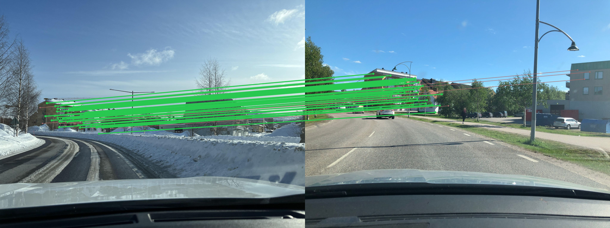
A pre-trained feature matcher establishes correspondences between the live snow frame and a clear-season prior of the same coordinates. A homography (projection transformation) is fitted to those correspondences and geometrically connects the clear-season prior to the snow frame. A pre-trained segmenter produces a road mask on the clear prior, and that mask is warped through the homography onto the winter image, producing an overlay of where the road is underneath the snow.
Per snow frame, six steps:
┌──────────────┐ ┌──────────────────────┐
│ Snow frame │ │ Clear-prior frame │ Any geo-tagged
│ (live) │ │ │ clear-weather
│ │ │ │ imagery
└──────┬───────┘ └──────────┬───────────┘
│ │
│ ▼
│ ┌──────────────────────┐
│ │ Mask2Former segmenter│ Pretrained
│ │ │
│ └──────────┬───────────┘
│ │ Road mask in prior space
│ │
└► DISK + LightGlue feature matching ◄─┘ Pretrained
│
│
▼ Image correspondences
USAC-MAGSAC homography
│
▼
warp prior mask → snow space
│
▼
fuse over K=3 priors + EMA over time for smoothness
│
▼
┌──────────────────────┐
│ Road overlay on the │
│ snow frame │
└──────────────────────┘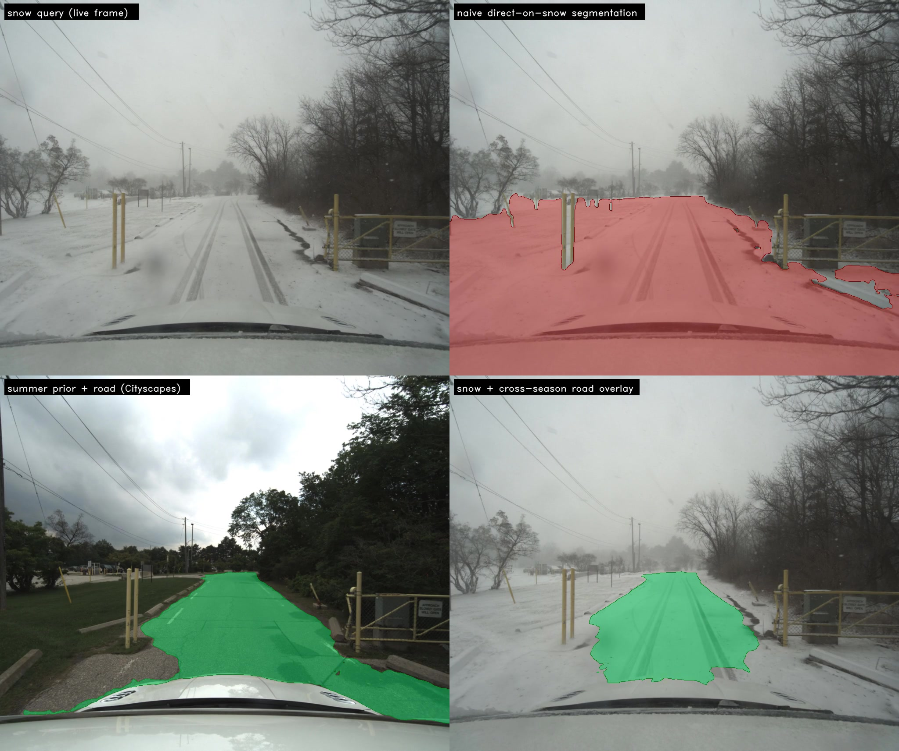
The video processor wraps a per-still-image-pair pipeline in three thin layers: a track loader indexing snow and summer streams by GPS pose, a prior pool returning the K = 3 nearest summer captures by distance for each snow frame, and an exponential moving average (α = 0.4) on the binary road mask to produce a smoother continuous render of the transferred road position.
The output of the Snowseer pipeline is restricted to presenting only where the road is expected to be, not where the snow should necessarily be cleared by the plough. A broader autonomous snow-clearing system would integrate Snowseer with other sensing and safety processes (lidar, depth, obstacle detection), each unburdened of the road-position problem on a buried road.
| Component | Role | Pretrained on |
|---|---|---|
| DISK (NeurIPS ‘20) | Local feature detector + descriptor | MegaDepth · no snow |
| LightGlue (ICCV ‘23) | Sparse feature matcher | MegaDepth · no snow |
| USAC-MAGSAC (CVPR ‘20) | Robust homography | n/a |
| Mask2Former (CVPR ‘22) | Road segmenter (on the clear prior only) | Cityscapes · no snow |
| Boreas (IJRR ‘23) | Snow + paired summer driving captures (dataset) | n/a (CC BY 4.0) |
Components used unmodified and crucially without any retraining. None is fine-tuned on snow.
The demo material is video clips from snow-covered streets in Toronto, captured in the Boreas dataset (January 2021 and February 2025). The pipeline produces a continuous green road-region overlay tracking the buried road frame by frame. A side-by-side naive baseline (the same Cityscapes segmenter applied directly to the snow frame) is included for contrast: the naive overlay sprawls across frames into clearly non-road territory, while the cross-season overlay tracks the buried road continuously through the clip on a pipeline whose learned components have never seen snow.
The same pipeline was also verified across an 18-pair static-stills set from different nordic regions, covering distinct snow scenes, road layouts and environments. It was the foundation the video pipeline was built on.
Each pair below is a 2×2: snow query (top-left), naive Cityscapes baseline applied directly to snow with the road class in red (top-right), paired summer prior of the same scene (bottom-left), cross-season overlay with the road transferred onto the snow frame in green (bottom-right).
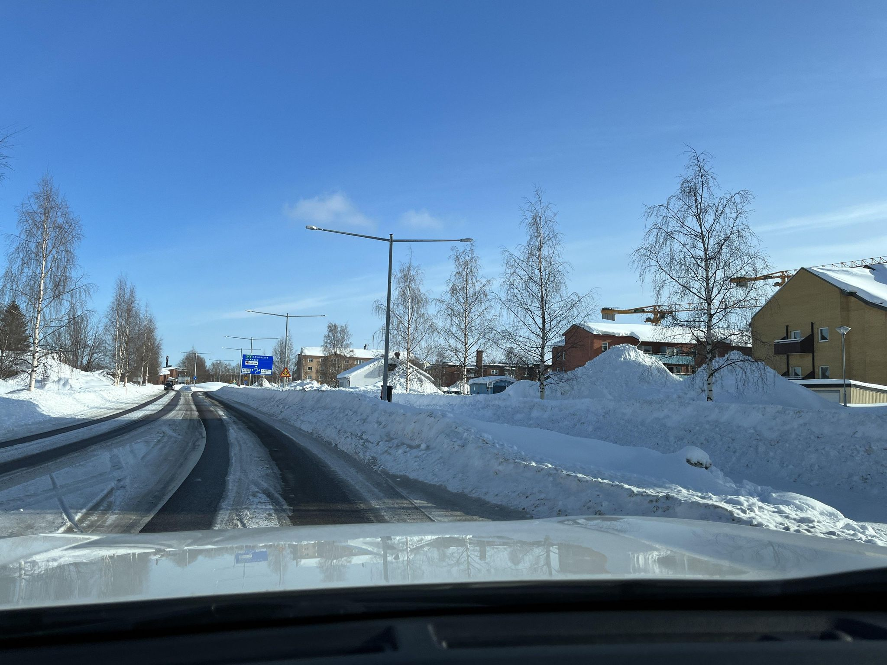
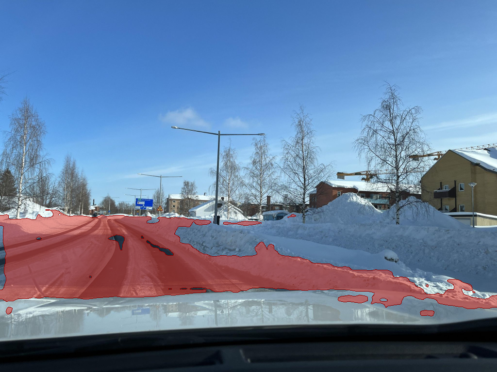
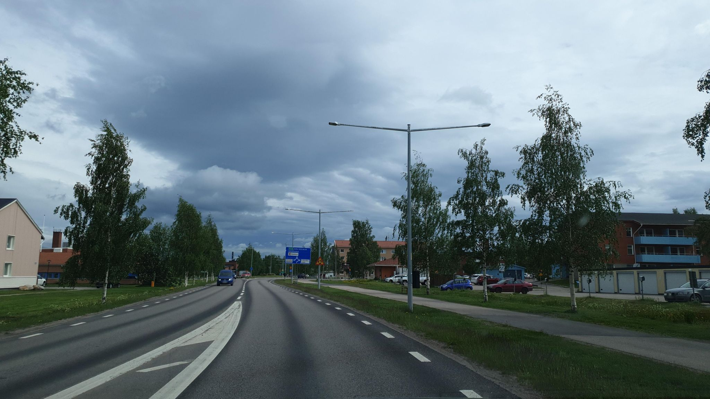
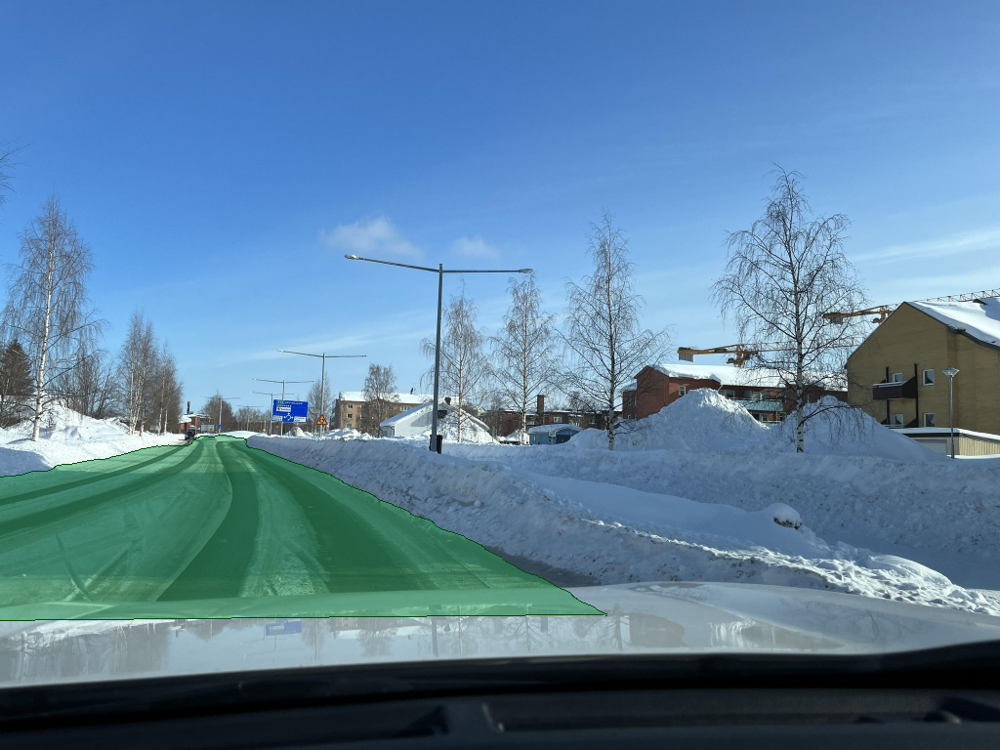
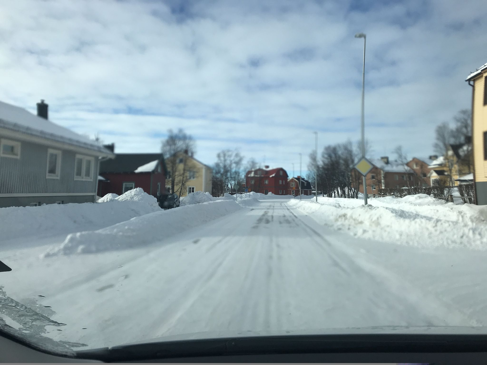
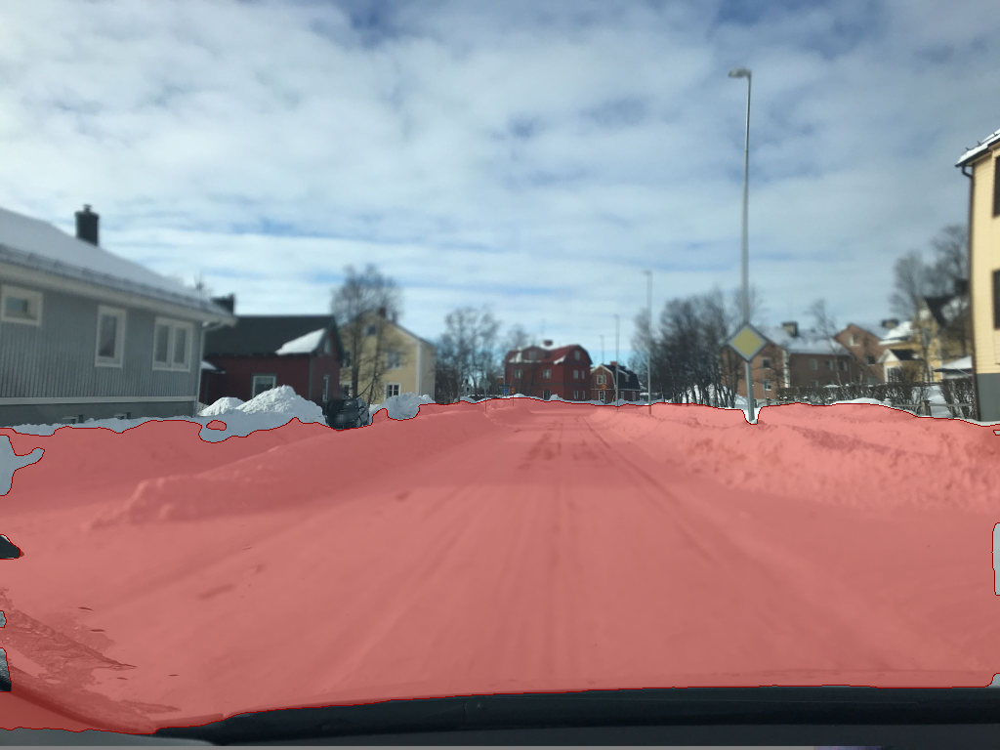
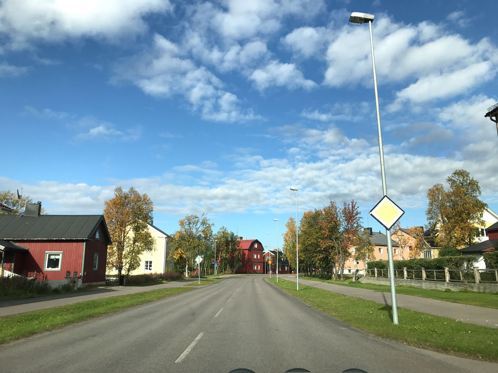
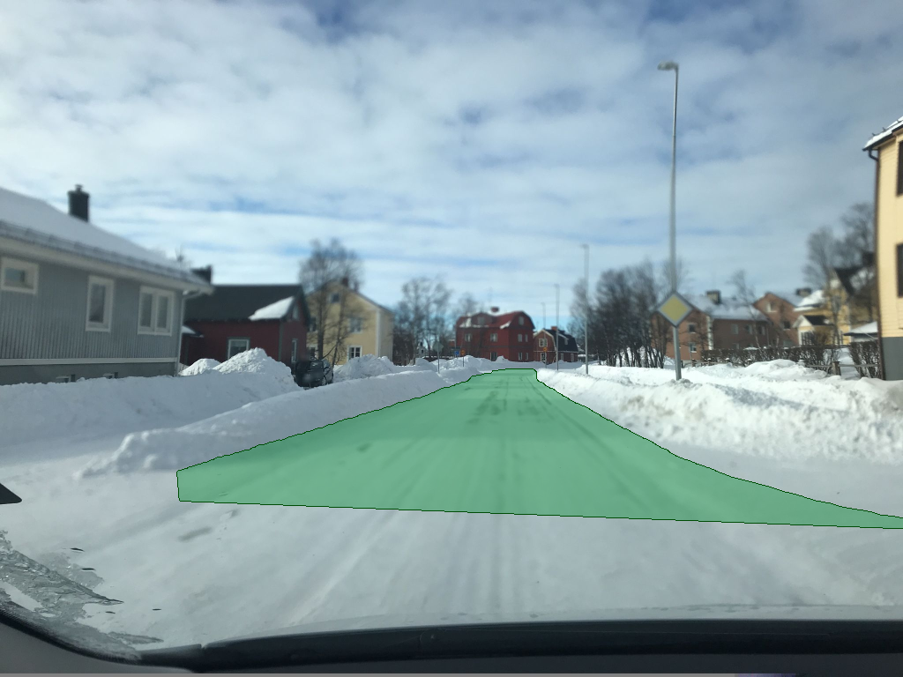
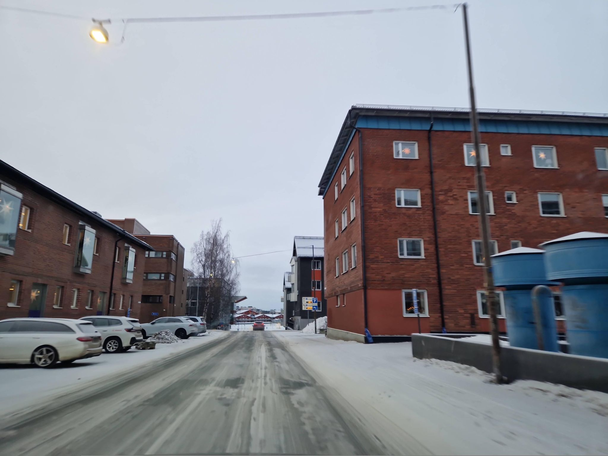
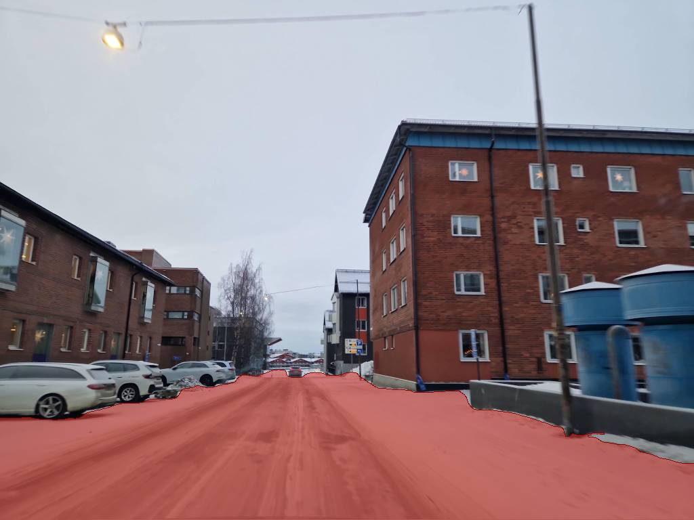
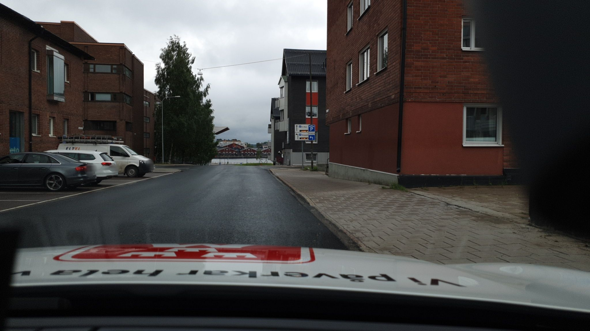
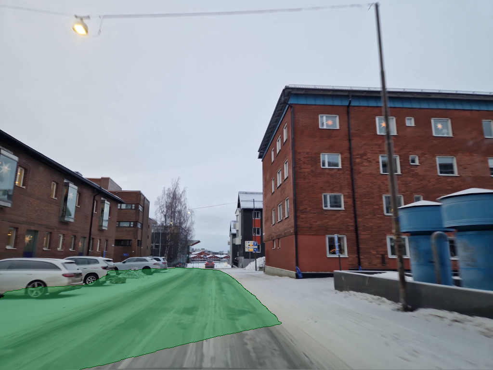
The entire pipeline is reproducible from a clean clone with make reproduce. The only handle the system has on the snow regime is the clear-season prior of the same place.
The pipeline is not, currently, real-time. Partly due to lack of access to a snow plough and vast amounts of snow, but perhaps also due to computational constraints, the road overlay pipeline currently runs asynchronously to when images are taken. This is a barrier to deployment, but is an implementation task which is certainly surmountable if this project were to take a more operational form. There is nothing in the principle that stops a knowledge-transfer system running live. The matching pass dominates per-frame compute, taking around 16 s per frame on Mac CPU. Demo clips build end-to-end in roughly an hour. Real-time operation needs a substantially faster matcher and segmenter, which is a deployment-engineering problem rather than a research question, and is the first item in the next-steps section.
The system is not, currently, able to be deployed arbitrarily. The design of the present iteration of the pipeline is contingent on a certain format of high-quality clear-road imagery. Generalising the system to operate on any given road with Google Street View (or a comparable source) available is feasible (the pipeline is substrate-agnostic in principle), but the current code does not support this and is geared toward producing the specific material in this demonstration. Integrating a wider source corpus is a natural next step.
The key contribution of this project is not to revolutionise the snow ploughing process, rather to present the concept of constants as a bridge as a foundation for general information transfer across environments. Other projects of a similar nature, possessing similar structural characteristics, should certainly be explored.
To get the snowplough-specific project to the operational level, the next steps are to upgrade the following components:
The snowplough's road-position channel is one consumer of this appliance. The same appliance, with the same recipe, could power fog, dust, smoke, heavy-rain and night driving, as well as heads-up display navigation, seeing around corners, and many more use cases.
git clone https://github.com/aturner22/snowseer; cd snowseer
uv sync --python 3.12
export MAPILLARY_TOKEN=<token>
make reproducemake reproduce runs three steps sequentially (~3 hours on Mac CPU): the January 2021 canonical clip, the February 2025 robustness clip, and the 18-pair static-stills precursor. make track TRACK=<id> runs a single track ad-hoc. make stills runs only the static-stills demo (MAPILLARY_TOKEN required). make notebook re-executes the analysis notebook in place.
Companion notebook: analysis.ipynb.